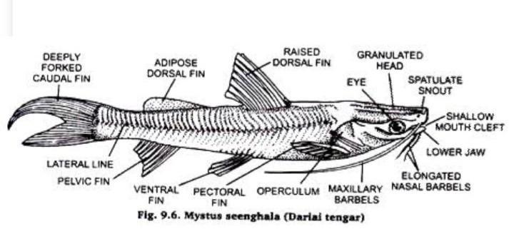

Practical on Mystus vittatus (Striped Dwarf Catfish)
Introduction
Mystus vittatus, commonly known as the Striped Dwarf Catfish, is a small freshwater fish found in South Asia. It is an important species in local fisheries.
Scientific Classification
- Kingdom: Animalia
- Phylum: Chordata
- Class: Actinopterygii
- Order: Siluriformes
- Family: Bagridae
- Genus: Mystus
- Species: Mystus vittatus
Morphology
- Small, elongated body with barbels around the mouth.
- Silvery with dark vertical stripes.
- Dorsal and caudal fins are well-developed.
Habitat & Distribution
- Found in rivers, lakes, and ponds in India, Bangladesh, and Pakistan.
- Prefers slow-moving or stagnant water bodies.
Economic & Ecological Importance
- Consumed as food fish in rural areas.
- Used in aquarium trade due to its small size.
Diagram

Fig: External structure of Mystus vittatus
Conclusion
Mystus vittatus is a small but ecologically significant freshwater fish. Conservation efforts should focus on maintaining its natural habitat.